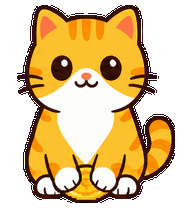
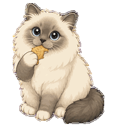

Animation Re-architecture / 2026.08
先重构动画运行时，再决定桌宠是否回来
当前 UI 动效已经轻量可用，PetManager 也有通过人工审查的动作候选。真正的缺口是确定性播放、状态语义、输入仲裁、透明命中和安全回滚。推荐将桌宠放进独立 Tauri 沙盒，保持 v1 收入工具不受影响。
01 / Routes
四条实施路线
路线 A 是必要基础，路线 B 是推荐主线。路线 C 保留为 v2 目标，路线 D 只有在 Canvas 2D 真实基准失败时启动。
Recommended / B
混合桌宠沙盒
02 / Architecture
推荐运行时边界
PetManager 只生产净化包；TypeScript 决定动作和逐帧播放；Rust 只处理包安全、原生窗口和动态命中。
03 / State Studio
状态、互动与业务事件
这是语义模拟，不是最终动画。它用于检查一个基础状态如何映射不同单击反馈，以及长按移动和业务事件如何取得播放权。

基础状态
用户互动
额外业务事件
04 / Comparison
取舍矩阵
“视觉上限高”不等于“现在就应该做”。当前最重要的是可回滚、可证明和不影响收入主线。
| 路线 | 现有产品风险 | 视觉上限 | 输入与命中 | 预计周期 | 决策 |
|---|---|---|---|---|---|
| A · UI 动效基础集中令牌与现有窗口动效 | 低 | 中 | 不涉及桌宠 | 1-2 周 | 必做基础 |
| B · 混合桌宠沙盒Tauri + Canvas 2D + Rust 原生端口 | 中低 | 高 | 可精确控制 | 4-6 周沙盒 | 推荐主线 |
| C · 完整动画运行时独立可复用平台 | 高 | 高 | 完整 | 8-12 周以上 | v2 方向 |
| D · 原生 GPU Spikewgpu/Skia 透明子窗口 | 高 | 最高 | 最高，但桥接复杂 | 先 Spike | 条件启动 |
05 / Gates
六个里程碑与停止条件
每一步都能独立回退。M4 前不加载正式产品资源，M6 前不提供普通用户入口。
- M0合同与失败测试
固定状态、manifest 和输入语义。素材合同需要身份特判时立即停止。
- M1UI Motion Foundation
集中令牌并保护焦点、键盘和 Mini 隐私状态机。
- M2沙盒播放器
Canvas 逐帧播放；性能不达标才进入原生 GPU Spike。
- M3输入与命中
拖动不误判单击，透明区不吞点击，晚到事件不恢复旧状态。
- M4-M5Classic / 多多
Classic 影子接入，多多无特判兼容，损坏包安全回滚。
- M6公开门禁
DPI、60/120Hz、睡眠恢复、两小时稳定与 reduced-motion 全部有证据。
06 / Evidence
素材与历史证据
页面中的角色图只用于解释状态。实际 S4.3/S5.5 候选仍保留在 PetManager，并保持 approved、ready=true、published=false。
候选身份
- Classic S4.3 motion manifest
8DD24D0A65DF896D25DF484868D4FDFE92DCBD5B8033F6AF94E80E640B3D3247 - 多多 S5.5 motion manifest
AAFE57B1E912E9306F7E01E14001160543DEE1A1FC9D1A51F5EFC7780C69ABB1 - 共同几何合同
192x208 · anchor 0.5/0.95 · foot baseline 198 - 当前状态
approved · ready=true · published=false
历史静态参考
